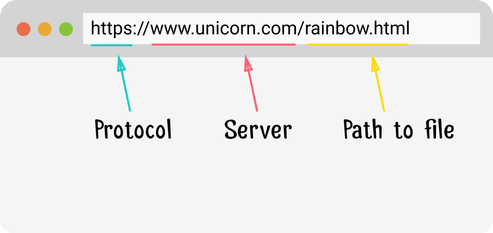
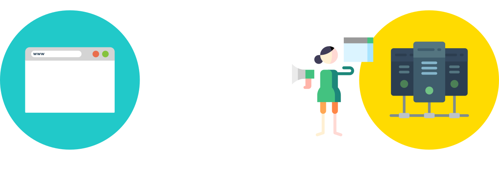
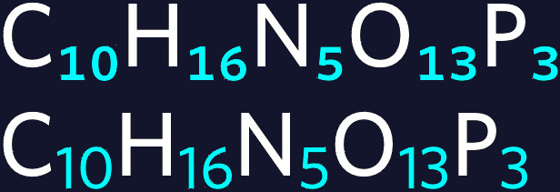
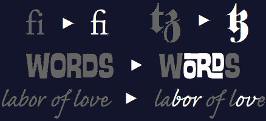
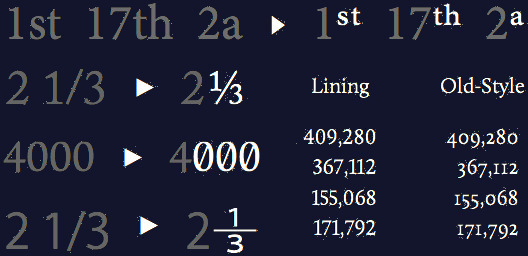
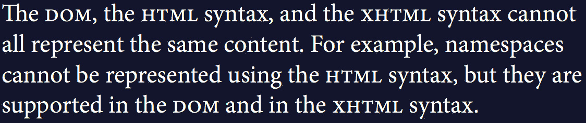
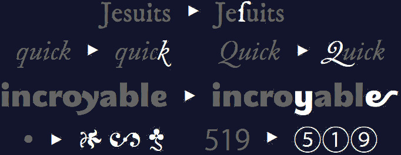
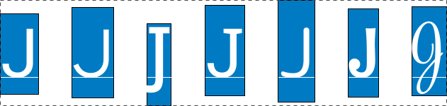

Working with CSS doesn’t have to make you cry
By Chen Hui Jing / @hj_chen

Cascading Style Sheets
is a simple mechanism for adding style (e.g., fonts, colors, spacing) to Web documents.
Source: W3C Cascading Style Sheets home pageI had a hard time making Univers too. To think of the sort of aberrations I had to produce in order to see a good result on Lumitype! V and W needed huge crotches in order to stay open.
Adrian Frutiger – Typefaces: The Complete Works
Font formats for web use
| WOFF2 (Web Open Font Format 2) |


|
| WOFF (Web Open Font Format) |
|
| OTF (OpenType) |

|
| TTF (TrueType) |

|
| EOT (Embedded Open Type) |
|
| SVG (Scalable Vector Graphics) |
Abridged explanation of the web (1)
 Abridged explanation of the web (2)
Subsetting web fonts

Variable fonts
Working with CSS
Incremental Font Transfer
Incremental transfer allows clients to load only the portions of the font they actually need which speeds up font loads and reduces data transfer needed to load the fonts. A font can be loaded over multiple requests where each request incrementally adds additional data.
—Incremental Font Transfer W3C Working Draft
@font-face rule
1. Declare the font
@font-face {
font-family: 'Magnetic Pro';
src: url('../fonts/magnetic-pro-regular.woff2') format('woff2');
}
@font-face {
font-family: 'Magnetic Pro';
src: url('../fonts/magnetic-pro-italic.woff2') format('woff2');
font-style: italic;
}
@font-face {
font-family: 'Magnetic Pro';
src: url('../fonts/magnetic-pro-bold.woff2') format('woff2');
font-weight: bold;
}2. Use the font
h1 {
font-family: 'Magnetic Pro', Helvetica, sans-serif;
}
Slides for This world mixed and blended by Gao Wei.


@font-face {
font-family: 'Raleway';
src: url('fonts/raleway-regular.woff2') format('woff2');
/* no range specified, defaults to entire range */
}
@font-face {
font-family: 'Raleway';
src: url('fonts/comfortaa_regular.woff2') format('woff2');
unicode-range: U+0400–U+04FF; /* Unicode range for Cyrillic characters */
}Typesetting on the web
Authors should language-tag their content accurately for the best typographic behaviour.
—CSS Text Module Level 3
<!doctype html>
<html lang="en"><p>비비는 오는 24일 오후 1시 더블 싱글 형태로 '모토스피드 24시(<span lang="en">Motospeed 24</span>)'와 '불륜(<span lang="en">Sweet Sorrow of Mother</span>)' 2곡을 공개한다.</p>CSS font properties
font-family |
specifies a prioritized list of one or more font family names and/or generic family names for the selected element. |
font-size |
Indicates the desired height of the glyphs. Takes absolute or relative values. |
font-weight |
Specifies the weight of the glyphs in the font. Can use keywords or numerical values. |
font-style |
Allows italic or oblique faces to be selected. |
font-stretch |
Selects a normal, condensed or expanded face from a font family. Range spans over 9 keywords. |
font-size-adjust |
Adjusts the font-size to preserve the x-height of the first choice font. |
font-synthesis |
Controls whether user agents are allowed to synthesize bold or oblique font faces when missing. |
font-size-adjust

See the Pen Demo of font-size-adjust by Chen Hui Jing (@huijing) on CodePen.
font-synthesis
font-synthesis
We use italics to emphasise words in English, 但是中文则是用着重号.
OpenType features
- aalt
- abvf
- abvm
- abvs
- afrc
- akhn
- blwf
- blwm
- blws
- calt
- case
- ccmp
- cfar
- cjct
- clig
- cpct
- cpsp
- cswh
- curs
- cv01 – cv99
- c2pc
- c2sc
- dist
- dlig
- dnom
- dtls
- expt
- falt
- fin2
- fin3
- fina
- flac
- frac
- fwid
- half
- haln
- halt
- hist
- hkna
- hlig
- hngl
- hojo
- hwid
- init
- isol
- ital
- jalt
- jp78
- jp83
- jp90
- jp04
- kern
- lfbd
- liga
- ljmo
- lnum
- locl
- ltra
- ltrm
- mark
- med2
- medi
- mgrk
- mkmk
- mset
- nalt
- nlck
- nukt
- numr
- onum
- opbd
- ordn
- ornm
- palt
- pcap
- pkna
- pnum
- pref
- pres
- pstf
- psts
- pwid
- qwid
- rand
- rclt
- rkrf
- rlig
- rphf
- rtbd
- rtla
- rtlm
- ruby
- rvrn
- salt
- sinf
- size
- smcp
- smpl
- ss01
- ss02
- ss03
- ss04
- ss05
- ss06
- ss07
- ss08
- ss09
- ss10
- ss11
- ss12
- ss13
- ss14
- ss15
- ss16
- ss17
- ss18
- ss19
- ss20
- ssty
- stch
- subs
- sups
- swsh
- titl
- tjmo
- tnam
- tnum
- trad
- twid
- unic
- valt
- vatu
- vert
- vhal
- vjmo
- vkna
- vkrn
- vpal
- vrt2
- vrtr
- zero
Font feature properties
font-kerning

|
font-variant-position

|
font-variant-position-ligatures

|
font-variant-numeric

|
font-variant-caps

|
font-variant-alternates

|
font-variation-settings
Working with CSS
CSS for controlling line breaks
line-break |
allows choosing various levels of “strictness” for line breaking restrictions |
word-break |
controls what types of letters are glommed together to form unbreakable “words”, causing CJK characters to behave like non-CJK text or vice versa |
hyphens |
controls whether automatic hyphenation is allowed to break words in scripts that hyphenate |
overflow-wrap |
allows the UA to take a break anywhere in otherwise-unbreakable strings that would otherwise overflow |
Line breaking by Florian Rivoal @ dotCSS
The complexity of line-breaking
Cats use their long tails to balance themselves when they’re jumping or walking along narrow ledges.
고양이는 좁은 가장자리를 따라 달리거나 걸을 때 균형을 잡기 위해 긴 꼬리를 사용합니다.
当猫在狭窄的壁架上跳跃或行走时，它们会用长尾巴来平衡自己。
Katzen nutzen ihren langen Schwanz, um beim Springen oder Laufen über schmale Felsvorsprünge das Gleichgewicht zu halten.
แมวใช้หางยาวเพื่อทรงตัวเมื่อกระโดดหรือเดินไปตามหิ้งแคบๆ
New CSS: text-wrap
Cats use their long tails to balance themselves when they’re jumping or walking along narrow ledges.
고양이는 좁은 가장자리를 따라 달리거나 걸을 때 균형을 잡기 위해 긴 꼬리를 사용합니다.
当猫在狭窄的壁架上跳跃或行走时，它们会用长尾巴来平衡自己。
Katzen nutzen ihren langen Schwanz, um beim Springen oder Laufen über schmale Felsvorsprünge das Gleichgewicht zu halten.
แมวใช้หางยาวเพื่อทรงตัวเมื่อกระโดดหรือเดินไปตามหิ้งแคบๆ
Websites do NOT have to look the same in every browser.
The leading problem
New CSS: text-box-*
Cats use their long tails to balance themselves when they’re jumping or walking along narrow ledges.
고양이는 좁은 가장자리를 따라 달리거나 걸을 때 균형을 잡기 위해 긴 꼬리를 사용합니다.
当猫在狭窄的壁架上跳跃或行走时，它们会用长尾巴来平衡自己。
Katzen nutzen ihren langen Schwanz, um beim Springen oder Laufen über schmale Felsvorsprünge das Gleichgewicht zu halten.
แมวใช้หางยาวเพื่อทรงตัวเมื่อกระโดดหรือเดินไปตามหิ้งแคบๆ
The interruption problem

CSS Rhythmic Sizing discussion threads
References
- W3C CSS homepage
- Adrian Frutiger – Typefaces: The Complete Works
- Digiset 50 T 1
- A brief overview of developments in digital type design
- Fundamentals of modern photo-composition
- The Adobe Originals Silver Anniversary Story: Typographic Tales from Japan
- Line breaking by Florian Rivoal @ dotCSS
- Leading-Trim: The Future of Digital Typesetting
- CSS Text Box Trim examples
- CSS Line Layout and Vertical Rhythm by Elika J. Etemad @ dotCSS
- CSS working group discussion threads
Thank you


Font is Work Sans by Wei Huang and Bagnard by Sebastien Sanfilippo.